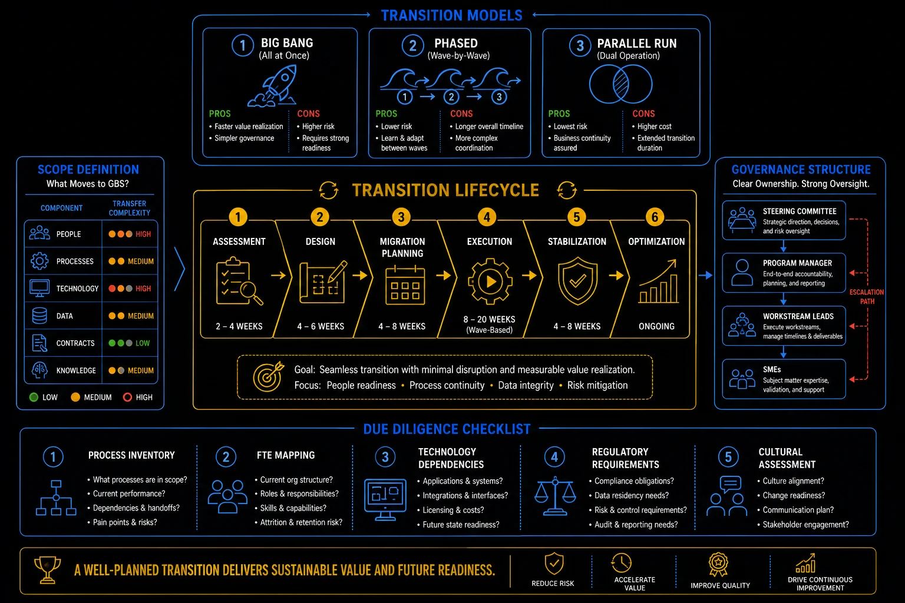

Pillar 10 · Cluster 1
GBS transition strategy and planning
Transitioning work from local operations to a GBS center is the defining moment of shared services. The methodology, due diligence, and governance you apply determine whether the transition delivers value or creates chaos.

Transition strategy — models, lifecycle, governance, and due diligence
Methodology
Lift and Shift vs Lift and Fix (Transform)
The fundamental strategic choice: move the process as-is and improve later, or redesign while migrating. Each approach has trade-offs in speed, risk, and long-term value.
Approach
- Move the process as-is to the new location
- Faster timeline — focus on knowledge transfer, not redesign
- Lower immediate risk — the process is proven
- Optimization comes later as a separate initiative
- Risk: you inherit all the problems and inefficiencies of the current process
Approach
- Redesign the process while migrating it
- Longer timeline — requires process analysis, redesign, and testing
- Higher implementation risk — new process and new location simultaneously
- Value delivered earlier — no separate optimization project needed
- Risk: scope creep as redesign ambitions expand during transition
- For first-wave transitions, Lift & Shift is usually safer — establish credibility with reliable delivery, then improve. Trying to transform and transition simultaneously doubles the risk.
- For subsequent waves, Lift & Fix makes more sense — you have the operational maturity to absorb change, and stakeholders have seen the GBS model work.
- The worst outcome is an unofficial hybrid: claiming Lift & Shift but allowing ad-hoc process changes during transition without formal change control.
Transition models — big bang, phased, parallel run
Scoping
Due diligence and scope validation
Before committing to a transition, you need to know exactly what you are taking on — volume, complexity, exceptions, dependencies, and the political landscape.
- Process inventory — document every process in scope with volumes, frequency, FTE count, and system dependencies
- Exception analysis — identify the non-standard cases, workarounds, and manual interventions that formal documentation misses
- Stakeholder mapping — who currently owns the process, who will be affected, and who has veto power
- System access requirements — what ERP roles, application access, and security clearances are needed
- Regulatory constraints — data residency, licensing, language requirements, and country-specific compliance rules
- People implications — impact on existing team (redeployment, redundancy, retention), hiring needs at receiving site
Due diligence always underestimates complexity. The formal process documentation shows the happy path. The reality includes 47 exception types, 12 manual workarounds, 3 undocumented approvals, and knowledge that exists only in one person's head. Build contingency into every timeline and cost estimate. If the due diligence says 6 months, plan for 9.
Due diligence — process, FTE, technology, regulatory, cultural
Governance
Transition governance and gate reviews
Gate reviews are the governance mechanism that prevents transitions from advancing when they are not ready. Each gate requires defined exit criteria to be met before proceeding.
Gate 1 — Scope Approval
Confirm the scope, timeline, resource plan, and business case. Approve the transition charter. Exit criteria: signed-off scope document, approved budget, assigned project team.
Gate 2 — Readiness
Confirm that the receiving team is trained, systems are configured, test scenarios are validated, and operational procedures are documented. Exit criteria: completed KT, successful parallel run, updated SOPs.
Gate 3 — Go-Live
Confirm that Service Acceptance Criteria (SAC) are met, hypercare plan is in place, and escalation paths are defined. Exit criteria: SAC sign-off, hypercare team staffed, rollback plan documented.
Transition lifecycle — assessment through optimization
The smartest transition plans invest in both sides — the receiving hub and the retained organization. Most playbooks focus heavily on the team taking over: training, resources, investment, ramp-up. That makes sense, but the retained team needs just as much clarity. They need to know how the new process works, who to contact at the hub, what the handoff points look like, and what to expect post-go-live. When both sides are prepared, transitions land cleaner and stabilize faster. If you're involved in a transition — on either side — make sure the retained organization has a clear playbook too. It's one of the highest-impact things you can advocate for, and it's often the difference between a smooth landing and months of firefighting.
Reference
Glossary
Full glossary at the GBS Insider Club Field Guide.
- SSON — GBS Transition Best Practices Guide, 2025
- Deloitte — Shared Services Transition Playbook, 2024
- Everest Group — GBS Transition Assessment Framework, 2025
- McKinsey — Delivering large-scale transformation programs, 2024